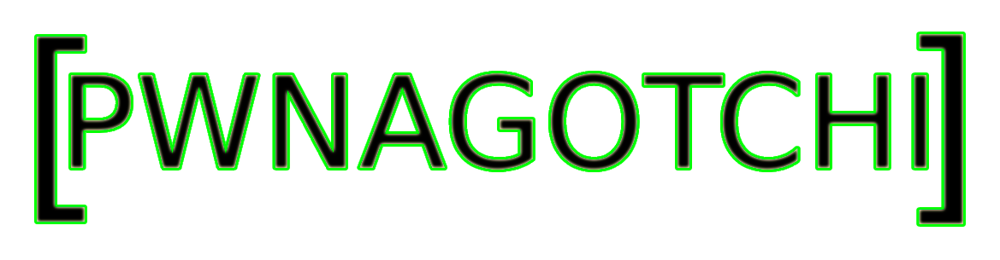

> A custom-configured Pwnagotchi designed to capture WPA/WPA2 handshakes for
offline cracking.
> Hardware Used:
- Raspberry Pi Zero W
- Waveshare eInk 2.7" Display
- 8GB Micro SD card
- Micro SD card to USB adapter
> Software Used:
- Bettercap (Wi-Fi attack framework)
- Python (Custom scripts and getting the unsupported eInk display to work)
- BalenaEtcher (for flashing Pwnagotchi image)
- Pwnagotchi .img file
> Features:
- AI-powered Wi-Fi attack tool designed for automated handshake capturing
- Offline WPA/WPA2 password cracking
- Configurable to display stats and handshakes on an eInk display
> Result:
- Efficient, low-power device for passive wireless monitoring and
handshake capture
> My thoughts:
- I really enjoyed this project, I had some issues because I got the
Waveshare V3 display instead of the V1/V2 but I fixed this by making small
changes to the config.toml file.
- This project really displays how hacking and similar activities have slowly
been becoming more automated. Instead of having to use programs like aircrack
and airodump, people can put together a project like this and walk around
capturing WPA/WPA2 PSK hashes which they can then automatically crack later
with a program such as aircrack.
Type cd .. to return to the project list.
root
@
185.199.111.1
:/
pwnagotchi$